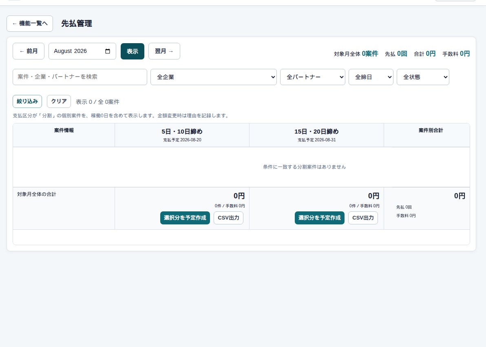
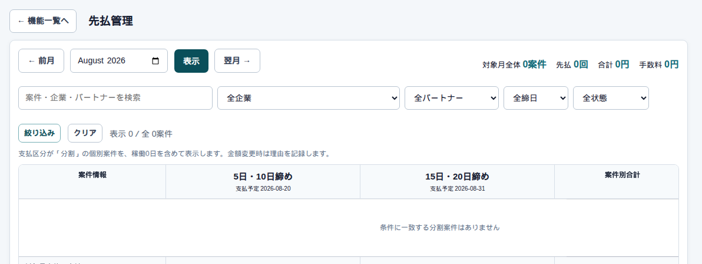

精算 → 先払い
先払い
まず、この画面
支払区分が分割の個別案件を、月の3グループで見ます。稼働0日でも出ます。管理者・経営者・総務が使います。


何をどこに入れるか
| ここ | 何をするか |
|---|---|
| 前払額 | 初期値は確認済み日報の日数×前払単価。変えるときは理由 |
| 手数料 | 変えるときは理由 |
| 選択分の支払予定を作成 | チェックした行の予定を作る／更新する |
| CSV出力 | そのグループの銀行向けファイル |
| 前払条件 | 案件ごとの単価と適用開始。画面下の「＋ 前払条件」 |
よくある使い方
上旬グループの予定を作る
対象月を出し、上旬の行をチェックして「支払予定を作成・更新」します。実行済みの行はロックされます。
気をつけること
ここは案件に紐づく先払いです。パートナー個人の立替返済（分割債権）とは別です。混ぜて登録しません。
分割案件が無い月は空の表になります。